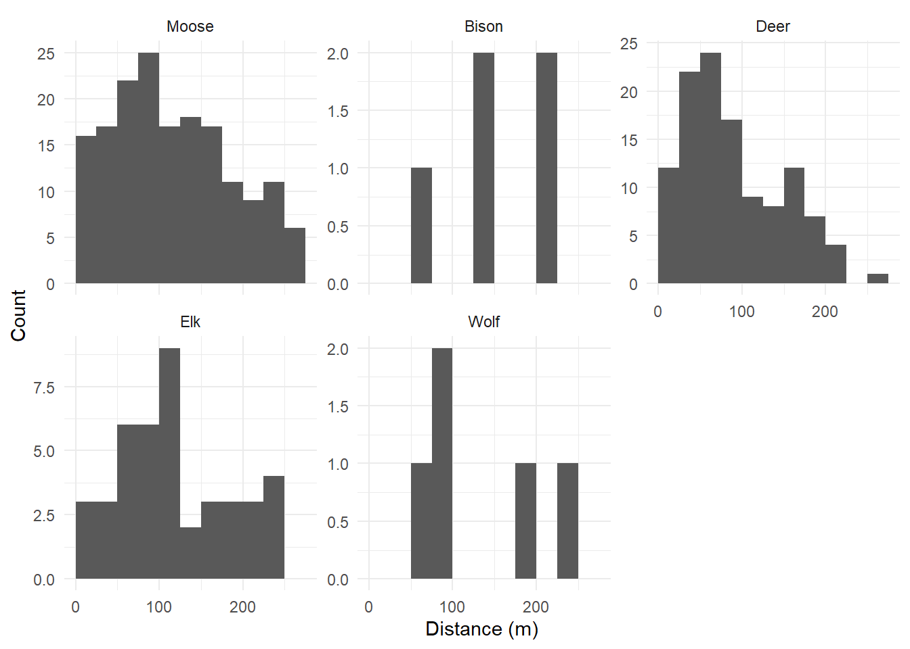
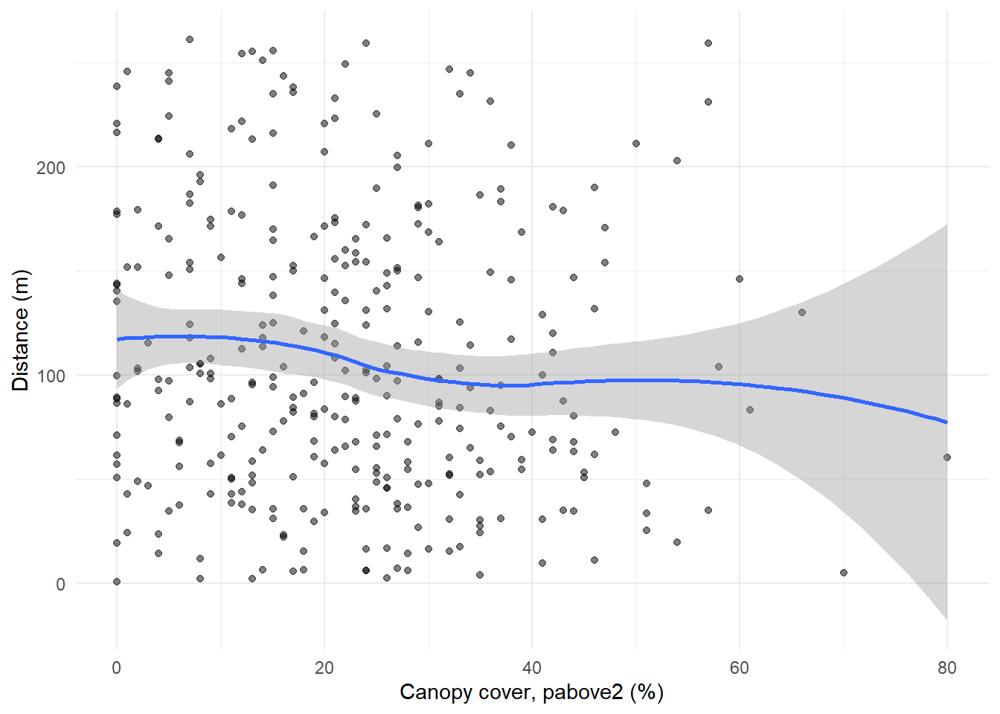
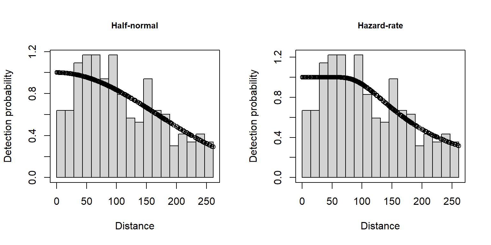
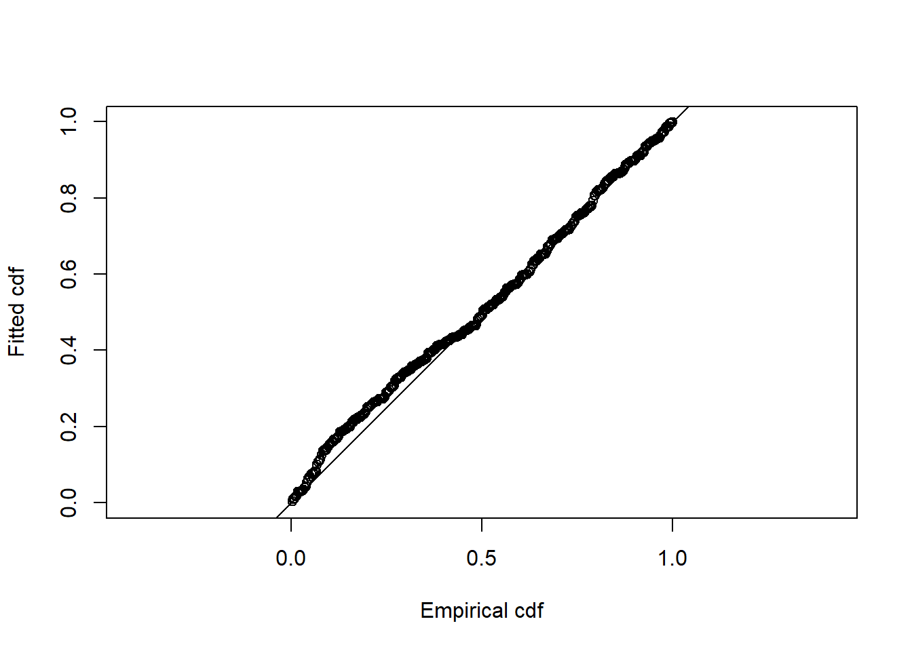
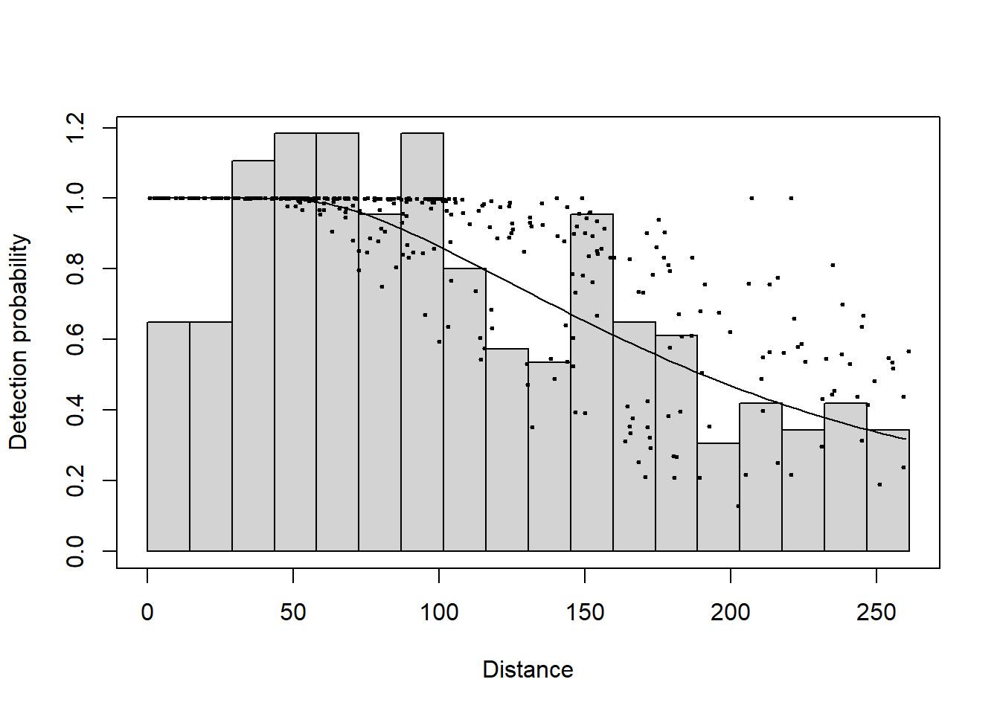

library(here)
library(Distance)
library(ggplot2)Estimating the detection function
Introduction
Not every animal within the searched strip is seen. The detection function describes how the probability of detecting an animal decreases with distance from the flight line, and it is what lets us correct counts for the animals that were missed (Buckland et al. 2001). In this article we fit candidate detection functions to the RMNP sightings, with and without covariates, and select one to carry forward into the density surface model.
The approach follows the detection function part of the dsm example A simple DSM analysis: Gulf of Mexico dolphins. The main difference is that we pool several species and let species enter the detection function as a covariate, since elk, deer and bison were seen too rarely to support separate models.
Prerequisites
We load the tables built in Adding covariates and building a prediction grid.
model_data <- readRDS(here("workflow", "outputs", "model_data.rds"))
list2env(model_data, envir = environment())<environment: R_GlobalEnv>dist$Species <- relevel(factor(dist$Species), ref = "Moose")Setting moose as the reference level means the Species coefficients in the detection function are differences from moose, our main species of interest.
Exploratory data analysis
The distribution of distances is the first thing to look at. A detection function assumes that detection is certain on the line and falls off smoothly with distance.
ggplot(dist, aes(distance)) +
geom_histogram(binwidth = 25, boundary = 0) +
facet_wrap(~Species, scales = "free_y") +
labs(x = "Distance (m)", y = "Count") +
theme_minimal()
Detectability may also depend on how much vegetation surrounds the animals. Here we plot distance against canopy cover at the sighting.
ggplot(dist, aes(pabove2, distance)) +
geom_point(alpha = 0.5) +
geom_smooth(method = "loess", formula = y ~ x) +
labs(x = "Canopy cover, pabove2 (%)", y = "Distance (m)") +
theme_minimal()
Fitting a detection function
We start with the two standard key functions without covariates: the half-normal and the hazard-rate. We also try a half-normal with cosine adjustment terms, which can add flexibility to the shape. All models use the truncation distance chosen in Formatting aerial survey data.
df_hn <- ds(dist, truncation = TRUNCATION_M, key = "hn", adjustment = NULL)
df_hr <- ds(dist, truncation = TRUNCATION_M, key = "hr", adjustment = NULL)
df_hn_cos <- ds(dist, truncation = TRUNCATION_M, key = "hn", adjustment = "cos",
max_adjustments = 2)summary(df_hr)
Summary for distance analysis
Number of observations : 337
Distance range : 0 - 261.1512
Model : Hazard-rate key function
AIC : 3714.685
Optimisation: mrds (nlminb)
Detection function parameters
Scale coefficient(s):
estimate se
(Intercept) 5.088875 0.1161706
Shape coefficient(s):
estimate se
(Intercept) 0.7062033 0.3031966
Estimate SE CV
Average p 0.7379299 0.04617706 0.06257648
N in covered region 456.6829246 31.28685218 0.06850892par(mfrow = c(1, 2))
plot(df_hn, main = "Half-normal")
plot(df_hr, main = "Hazard-rate")
Adding covariates to the detection function
Covariates change the scale of the detection function, so that animals are, for example, harder to see in dense cover (Marques et al. 2007). We try the candidates one and two at a time, with both key functions:
Species: animals differ in size and colour, and in how they react to aircraft;size: larger groups are easier to see;pabove2: canopy cover at the sighting;zmax: canopy height at the sighting.
covariates <- c("Species", "size", "pabove2", "zmax")
formulas <- c(
covariates,
combn(covariates, 2, paste, collapse = " + ")
)
df_cov <- list()
for (f in formulas) {
for (key in c("hn", "hr")) {
fit <- tryCatch(
ds(dist, truncation = TRUNCATION_M, key = key, adjustment = NULL,
formula = as.formula(paste("~", f))),
error = function(e) NULL
)
if (!is.null(fit)) df_cov[[paste(key, f)]] <- fit
}
}
length(df_cov)[1] 20tryCatch() skips any model that fails to converge rather than stopping the loop. Each fit takes 10–20 seconds, so the whole set takes several minutes.
Model selection
summarize_ds_models() builds a table of all models ranked by AIC, along with a Cramér–von Mises goodness-of-fit \(p\)-value and the average detection probability \(\hat{P}_a\).
all_models <- c(list(df_hn, df_hr, df_hn_cos), unname(df_cov))
model_table <- do.call(summarize_ds_models, c(all_models, list(output = "plain")))
head(model_table[, -1], 10) Key function Formula C-vM $p$-value Average detectability
4 Half-normal ~Species 0.1382301 0.6880180
14 Half-normal ~Species + pabove2 0.1249168 0.6858968
15 Hazard-rate ~Species + pabove2 0.2176036 0.7146805
5 Hazard-rate ~Species 0.2404013 0.7190473
12 Half-normal ~Species + size 0.1334928 0.6873846
16 Half-normal ~Species + zmax 0.1384754 0.6878383
13 Hazard-rate ~Species + size 0.2421826 0.7210369
17 Hazard-rate ~Species + zmax 0.2447069 0.7182970
19 Hazard-rate ~size + pabove2 0.2821516 0.7243433
9 Hazard-rate ~pabove2 0.3265923 0.7268709
se(Average detectability) Delta AIC
4 0.03600954 0.0000000
14 0.03588324 0.3541592
15 0.04411156 0.6525022
5 0.04417496 1.1705708
12 0.03601764 1.9260263
16 0.03603379 1.9664900
13 0.04342033 2.2408043
17 0.04408378 2.7661723
19 0.04517043 4.1146098
9 0.04654677 4.6735810Models within about two AIC units of the lowest are practically as well supported. Here the top models, with and without canopy cover, all fall within that range, and their average detection probabilities differ by less than their standard errors. AIC alone cannot choose between them.
model_table[model_table[["Delta AIC"]] < 2, c("Key function", "Formula", "Delta AIC")] Key function Formula Delta AIC
4 Half-normal ~Species 0.0000000
14 Half-normal ~Species + pabove2 0.3541592
15 Hazard-rate ~Species + pabove2 0.6525022
5 Hazard-rate ~Species 1.1705708
12 Half-normal ~Species + size 1.9260263
16 Half-normal ~Species + zmax 1.9664900When models are tied, the choice should rest on what we know about the survey. Canopy cover is an established cause of missed animals in aerial surveys, and a detection function with canopy can describe detectability in parts of the park the survey sampled differently. We therefore carry forward the hazard-rate model with species and canopy cover (pabove2). This is also the model selected in the RMNP analysis.
df_best <- df_cov[["hr Species + pabove2"]]
summary(df_best)
Summary for distance analysis
Number of observations : 337
Distance range : 0 - 261.1512
Model : Hazard-rate key function
AIC : 3709.111
Optimisation: mrds (nlminb)
Detection function parameters
Scale coefficient(s):
estimate se
(Intercept) 5.55552337 2.084457e-01
SpeciesBison 1.34198373 2.346007e+03
SpeciesDeer -0.58164161 2.078230e-01
SpeciesElk -0.14466684 2.911897e-01
SpeciesWolf 0.28128606 1.186971e+00
pabove2 -0.01008017 6.202909e-03
Shape coefficient(s):
estimate se
(Intercept) 0.8125708 0.278635
Estimate SE CV
Average p 0.7146805 0.04411156 0.06172208
N in covered region 471.5393941 32.47924255 0.06887917Detection falls off faster for deer than for moose, and faster in denser canopy (the pabove2 coefficient is negative). The coefficients for bison and wolves have very large standard errors: with five sightings each, their detection scale cannot be estimated. This does not affect the moose, deer and elk estimates. It does mean that these two species’ densities rest on very little information about detectability.
Goodness of fit
A quantile–quantile plot compares the fitted cumulative distribution with the empirical one. Points close to the line and a non-significant Cramér–von Mises test indicate that the model describes the distances well.
gof_ds(df_best)
Goodness of fit results for ddf object
Distance sampling Cramer-von Mises test (unweighted)
Test statistic = 0.22905 p-value = 0.217604
With covariates in the model, each sighting has its own detection function. The plot shows the average detection function over the histogram of distances, with the individual detection probabilities as points.
plot(df_best, showpoints = TRUE, pch = 20, cex = 0.5)
Saving
saveRDS(df_best, here("workflow", "outputs", "detection_function.rds"))References
Buckland, S. T., D. R. Anderson, K. P. Burnham, J. L. Laake, D. L. Borchers, and L. Thomas. 2001. Introduction to Distance Sampling: Estimating Abundance of Biological Populations. Oxford University Press.
Marques, Tiago A., Len Thomas, Steven G. Fancy, and Stephen T. Buckland. 2007. “Improving Estimates of Bird Density Using Multiple-Covariate Distance Sampling.” The Auk 124 (4): 1229–43. https://doi.org/10.1642/0004-8038(2007)124[1229:IEOBDU]2.0.CO;2.